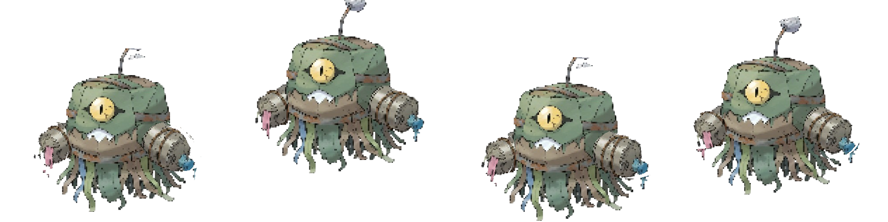
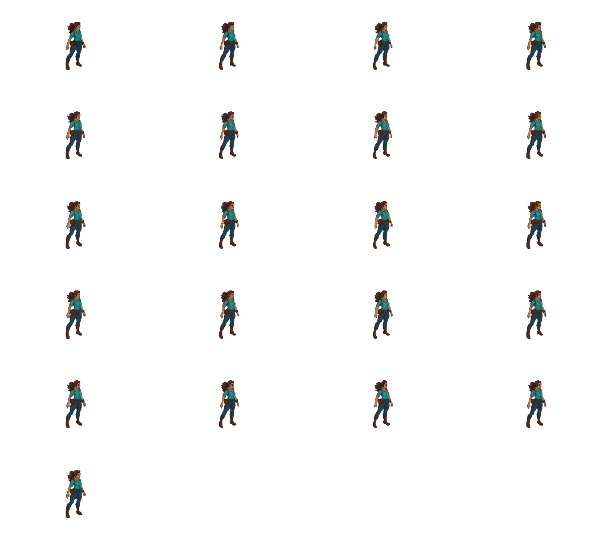
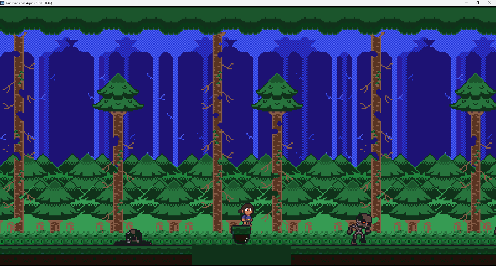
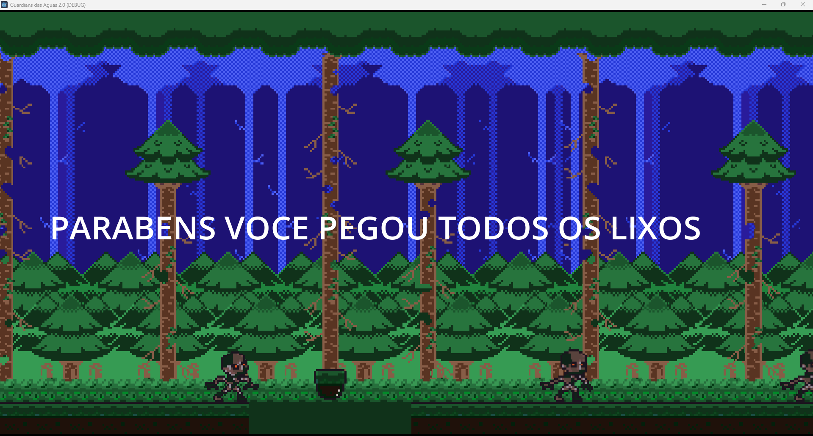
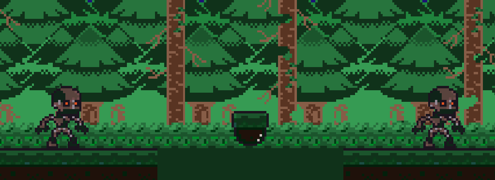

APRESENTAÇÃO FASE 2 - 25 DE FEVEREIRO DE 2026
GUARDIÃ
YACEU
Salve as florestas da terrível poluição da Lixotech neste jogo de plataforma focado na preservação das águas.

RESENHA GAMES
Visão Geral
High Concept
Gênero
Plataforma 2D de Ação
Tema Central
"Guardiã das Águas" (Preservação)
Contexto
O Problema e a Causa
Acesso a água potável e proteção da biodiversidade são os maiores desafios do nosso século.
- O Problema: Poluição desenfreada e despejo de resíduos tóxicos nas florestas pela corporação Lixotech.
- Por Que Importa? A degradação ambiental destrói os leitos dos rios, extinguindo o ecossistema local e ameaçando nossa sobrevivência.
- Contexto: Uma abordagem baseada no projeto Guardiões das Águas para ensinar sustentabilidade via Ciência Cidadã.

Nossa Audiência
Público-Alvo
Quem Vai Jogar?
Crianças, pré-adolescentes e jovens interessados em jogos side-scrollers dinâmicos.
Perfil (8 a 15 anos)
Geração Z e Alpha, nativos digitais, além de Educadores buscando ferramentas de gamificação.
Onde Encontrar?
Escolas parceiras, eventos de educação gamificada e plataformas gratuitas (Itch.io e Web).
Core Loop
Mecânica Principal
Como Funciona o Jogo?
- Core Loop: Explorar mapa -> Catar lixo -> Desviar/Lutar contra Monstros -> Purificar Fase.
- Interação com a Água: Ao coletar todos os resíduos que bloqueiam ou contaminam a nascente (tilemap corrompido), as águas voltam a fluir limpas.
- Objetivo Final: Coletar 100% dos lixos (garrafas, químicos) em todas as fases para paralisar a Lixotech para sempre.

Visual e Interface
Gameplay em Ação



Mercado
Modelo de Negócios
Free-to-Play (+ B2B Educacional)
- Receita: Patrocínio via editais de cultura (Lei Paulo Gustavo) e workshops B2B fechados para ONGs e escolas.
- Canais: Distribuição web directa e plataformas como Itch.io.
- Valor Proposto ao Consumidor Final: Gratuito (Acesso Democrático Educacional).
O que nos destaca
Diferencial Competitivo
A Conexão do Digital com Real
- Único: Não é apenas sobre pular plataformas, é sobre coleta hiperlocal de dados reais transposta para o jogo.
- Inovação: Desenvolvido em conjunto com o cinema de Ciência Cidadã (Filme-Carta). O jogo responde ativamente a uma campanha do mundo real.
Próximos Passos
Roadmap (Fase 3)
Curto Prazo
O que falta para a Fase 3?
Melhorias planejadas no combate contra o chefe (Máquina Cuspideira), polimento na resposta dos controles (pulo e dash) e balanceamento das hitboxes da Lixotech.
Médio Prazo
Áudio e Efeitos Visuais
Arte final detalhada nos fundos da floresta, efeitos sonoros (SFX) para a coleta dos lixos e música tema dinâmica.
Longo Prazo
Timeline de Entrega Final
Versão Beta concluída em 4 semanas. Lançamento completo do protótipo planejado para Junho de 2026, com campanha de marketing em escolas.
Call to Action
Jogue a Demonstração
O protótipo inicial (Fase 2) de Guardiã Yaceu já está disponível para testes. Venha sentir as mecânicas de movimento e ajudar Lara a limpar a floresta!